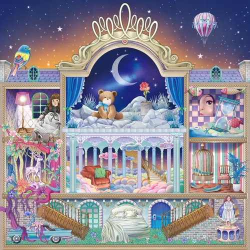
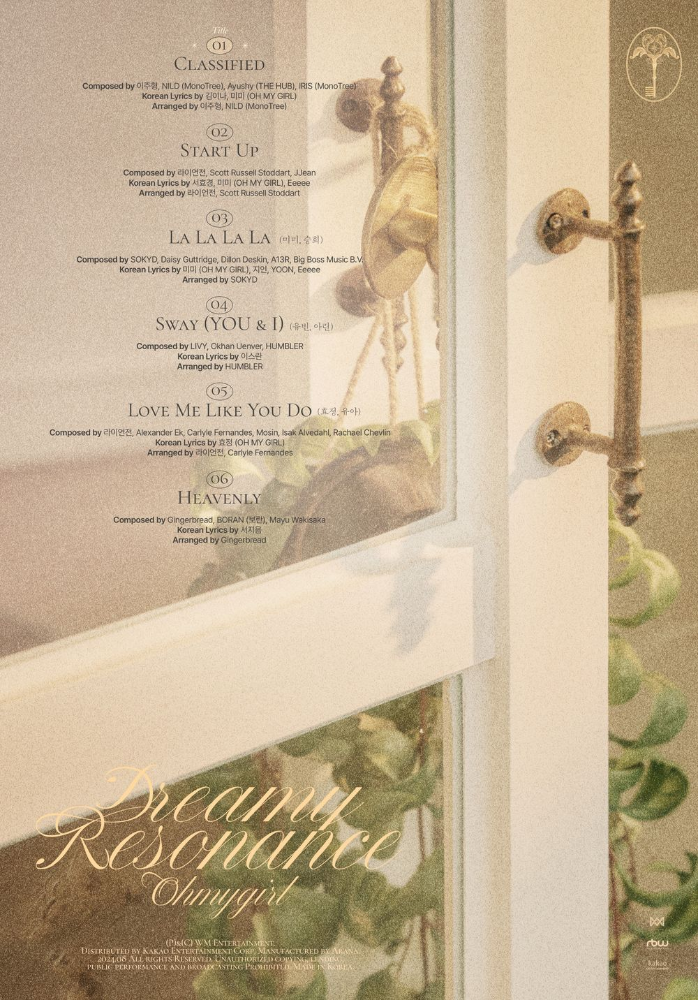

안녕하세요 라보엠입니다.
제가 좋아하는 아이돌 그룹 셋이 있는데, 러블리즈, 여자친구, 오마이걸입니다. 그중 홀로남은 오마이걸이 오늘 2024년 8월 26일 저녁 6시에 전앨범 발매 1년만에 미니10집 Dreamy Resonance 을 발표했습니다.
오마이걸 Classified MV
이전에 여름에 신나는 리듬의 Dun Dun Dance, 살짝 설랬어, 돌핀 등을 발표하며 서머송으로 인기를 모았던 오마이걸은 이번 뮤직비디오에서는 인형의 집을 모티브로 한듯한 컨셉으로 특히 머리 두건을 쓴 유아의 모습이 정말 인형같습니다. 의상도 클래식 인형같은 레이스가 많은 의상으로 인형들이 살아 움직이는 것같은 느낌을 줍니다. 이 컨셉은 8집 앨범 수록곡 나의 인형에서 모티브를 가져왔다고 합니다.
? Dreamy Resonance
— Melon 멜론 (@melon) August 26, 2024
└? #오마이걸_비하인드컷
나의 소중한 너 #오마이걸 ?
지금 확인하고, 사인 CD 받아가세요!
? https://t.co/e7WIHYf28u@8_OHMYGIRL #오마이걸#OHMYGIRL #Dreamy_Resonance pic.twitter.com/c7SSvONHe0
오마이걸 미니10집 Dreamy Resonance
타이틀곡 Classified 이 곡 외에 5곡이 더 수록되어 있으며, 신나는 댄스곡 Start up은 오마이걸의 색깔이 그대로 담겨 있습니다. 개인적으로 이게 더 오마이걸의 타이틀곡에 어울린다는 생각이 듭니다. 미미, 승희의 La La La, 유빈 아린의 Sway, 효정, 유아의 발라드곡 Love me like you do 등 유닛 구성으로 색다른 느낌을 주고 있습니다. 음악 활동 외에도 미미와 효정은 예능에서도 꾸준하게 활약하고 있는데요, 앞으로도 좋은 모습으로 10번째 앨범에 이어 20번째 앨범까지 달려나가길 바래봅니다. ^^

오마이걸 Classified 가사
La La La La La La La La
La La La La La La La (La La)
La La La La La La La La
La La La La La La La La La La La
날 깨운 빛, 내게 주어지는 공간
너의 마음속에 나만의 나만의 자리
I like to stick (stick)
비밀스러운 trick (trick)
난 네 맘에 잘 붙어있어
난 사실 다 기억해
힘들 때마다 털어놨던 말
그런 밤이면 난 할 일이 많아
Make you forget
이건 알려지지 않은
꿈의 건너편의 이야기
I fake that you're really gonna dream that
밤을 새워 만들어서 두고 가는 이야기
Sweet dream
Sometimes I dive into your dream
영원히 머무를 수는 없겠지만
Sometimes I cry to make you smile
우리가 서로의 뒷면을 전부 알 순 없지만
더 웃게 해주고 싶어
더 오래 알고 싶어
좋은 것만 기억해 줘 나의 소중한, 너
쉿, 내 얘길 들어봐
난 또 시작점에 있잖아
황혼 속에 메아리가 울려
실은 너도 궁금하잖아
I feel like low-key
Not that I know of 춤을 추지
우린 어여쁜 그대가 웃을 때까지 Nonstop
이건 알려지지 못하는
내 마음속의 이야기
I fake that you're really gonna dream that
비밀로 남겨질수록 아름다울 이야기
Sweet dream
Sometimes I dive into your dream
영원히 머무를 수는 없겠지만
Sometimes I cry to make you smile
우리가 서로의 뒷면을 전부 알 순 없지만
더 웃게 해주고 싶어
더 오래 알고 싶어
좋은 것만 기억해 줘 나의 소중한, 너
눈을 감은 채로
Look at the present
You don't see your present
심해를 항해 중
At the end of the day
We get past that
그땐 네가 내 꿈속에 달을 그려줘, 크게
Sometimes I dive into your dream
영원히 머무를 수는 없겠지만
Sometimes I cry to make you smile
우리가 서로의 뒷면을 전부 알 순 없지만
더 웃게 해주고 싶어
더 오래 알고 싶어
좋은 것만 기억해 줘 나의 소중한, 너

오마이걸 미니 10집 스토리 필름
오마이걸 플레이리스트
개인적으로는 초기의 비밀정원, 다섯번째 계절, 윈디데이, 클로저 이런 곡들을 좋아합니다. ^^
오마이걸 다섯번째 계절
오마이걸 비밀정원
오마이걸 윈디데이
오마이걸 불꽃놀이
오마이걸 번지